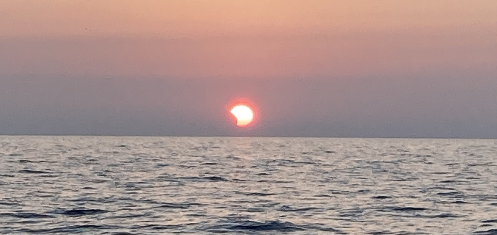

About Me

Partial eclipse at sunrise over Lake Michigan, Summer 2021.
About:
Hi, I'm Ezra! I'm studying Astrophysics at JHU in Baltimore, MD. I work with the Slice and Dice group, lead by Dr. Susan Kassin. I'm using Keck/DEIMOS spectroscopy to determine why some galaxies have strong winds, while others do not.
I'm also into ice skating and listening to podcasts!
Research

I use observations to better understand how galaxies change over time. Here's some of the specific projects I have been involved with:
I discovered strongly lensed galaxies by searching through public imaging surveys with COOL-LAMPS while at UChicago. One of those galaxies was C00L-J1323+0343, a particularly bright lensed quiescent galaxy at z~1. We characterized its morphology to better understand early-type galaxy evolution and hope to further study CJ1323 with future space based observations!
I used KAST on the Shane Telescope at Lick Observatory to follow up on strongly lensing systems found with a neural network while working with Prof. Xiaosheng Huang and Prof. David Schlegel as a SULI intern at the Lawrence Berkeley National Lab. I also helped create lens models using GIGA-Lens.
Contact
Email: ezrasukay at gmail.com